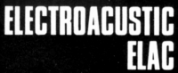
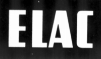
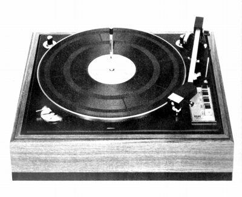
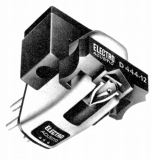
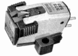
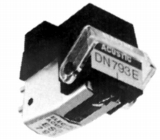
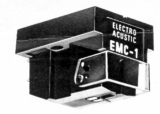

 
ELECTRO ACOUTIC（エレクトロ・アコースティック）/ELAC（エラック）
ドイツのカートリッジで有名なブランド。フィリップスと共に欧州におけるMM型のオリジネーターである。一般には「エラック」のブランド名で流通しているが、日本国内では商標登録の関係で「エレクトロ・アコースティック」で販売されていた。1970年代初頭にはアナログプレイヤーも輸入されていた。

(770H 1973年頃の製品）1970年頃の代理店は「エレクトリ」。1979年頃には「バブコ」、1981年には「バエス」、1984年頃には再び「エレクトリ」に戻った。なお「バブコ」と「バエス」は住所が同一であるので、同じ会社である可能性が高い。
�T.カートリッジ
1.MM型
�@44シリーズ

(STS 444-12)STS 244-17 STS 244-C STS 344-17 STS 344-E STS 444-12 STS 444-E
�A55シリーズ

(STS 555E)STS 155-17 STS 255-17 STS 355E STS 455E STS 555E STS 655-D4
�BESGシリーズ

(ESG793E)ESG791 ESG792 ESG793E ESG794E ESG795E
2.MC型

(EMC-1)